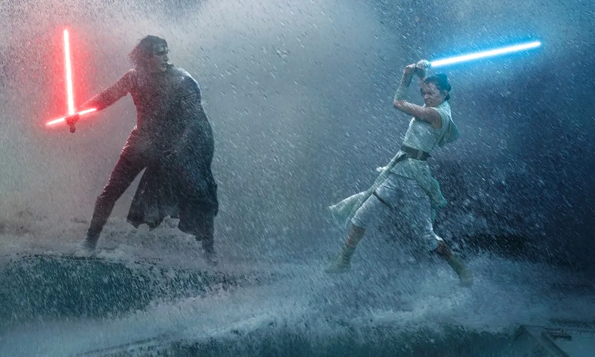
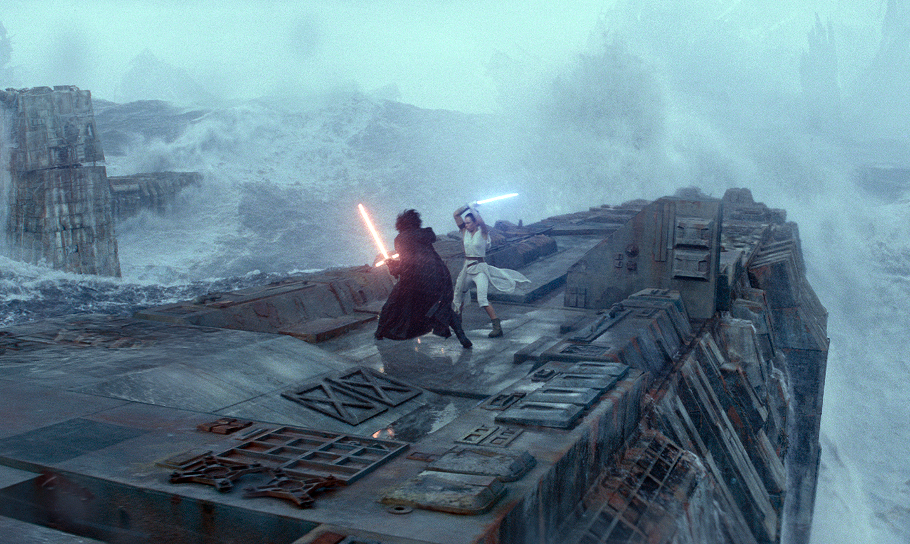

2019
2014
2011
2016
Un an a passé depuis que Kylo Ren a tué Snoke, le Leader suprême et pris sa place. Bien que largement décimée, la Résistance est prête à renaître de ses cendres. Rey, Poe, Leia et leurs alliés se préparent à reprendre le combat. Mais ils vont devoir faire face à un vieil ennemi : l'empereur Palpatine.


Dans un proche futur, la Terre est devenue hostile pour l'homme. Les tempêtes de sable sont fréquentes et il n'y a plus que le maïs qui peut être cultivé, en raison d'un sol trop aride. Cooper est un pilote, recyclé en agriculteur, qui vit avec son fils et sa fille dans la ferme familiale. Lorsqu'une force qu'il ne peut expliquer lui indique les coordonnées d'une division secrète de la NASA, il est alors embarqué dans une expédition pour sauver l'humanité.

Un jeune homme solitaire, The Driver, conduit le jour à Hollywood pour le cinéma en tant que cascadeur et la nuit pour des truands. Ultra professionnel et peu bavard, il a son propre code de conduite. Jamais il n'a pris part aux crimes de ses employeurs autrement qu'en conduisant - et au volant, il est le meilleur !
Au cœur de Los Angeles, une actrice en devenir prénommée Mia sert des cafés entre deux auditions. De son côté, Sebastian, passionné de jazz, joue du piano dans des clubs miteux pour assurer sa subsistance. Tous deux sont bien loin de la vie rêvée à laquelle ils aspirent… Le destin va réunir ces doux rêveurs, mais leur coup de foudre résistera-t-il aux tentations, aux déceptions, et à la vie trépidante d’Hollywood ?